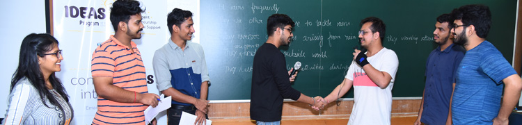
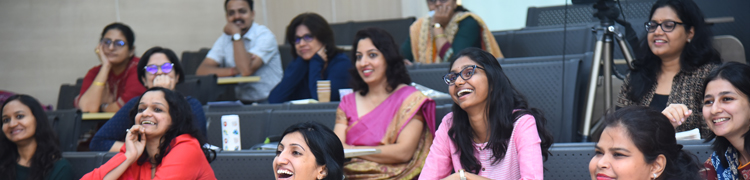
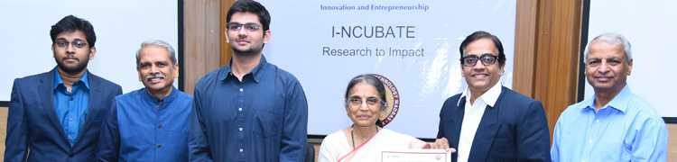

The entrepreneurship courses are complemented by experiential learning in various aspects of product innovation and business lifecycle through structured mentoring programs offered by DSSE, supported by partner organizations. These include IDEAS (Innovation, Development and Entrepreneurship with Alumni Support), WiE (Women in Entrepreneurship), I-NCUBATE and others.
IDEAS
IDEAS – Innovation, Development and Entrepreneurship with Alumni Support is the key mentoring program introduced in 2017, supported by Class of 1990 alumni of IIT Bombay. It provides accelerated hands-on learning to first time entrepreneurs, enabling faster progress toward venture creation, including startup incubation and angel funding.
Students, researchers, faculty and recent alumni can avail the benefits of the initiatives at any stage during the pre-incubation phase, starting from choosing entrepreneurship, ideation, validation, initial funding and connection to investors and incubators.
The initiatives under IDEAS are spread across three levels. At Level 0, we offer unstructured mentoring to help the entrepreneurs navigate the early stages of discovery via Startup Clinic, supported by workshops on ideation, bootcamp and building mixers, as well as Mentor Hours and Mentor Connect with IITB alumni. Level 1 and Level 2 are structured programs. In both levels, micro-grants are provided to cover basic costs of prototyping, testing, travel, business planning and other expenses.
The first level is for three months during summer/winter vacation to find the problem-solution fit. Each team has at least two students, who undergo intense weekly coaching by the IDEAS team and mentoring by an alumni mentor. They learn the ropes by carrying out market research, unmet need identification, problem definition, proof-of-concept fabrication and feasibility evaluation. The goal of this level is evidence-based decision: go, no-go or pivot. The second level is a 12-month self-paced program to find the product-market fit. Each team is guided by two alumni mentors in building the minimum viable product and testing it in the market, as well as get exposure to legal, financial, leadership, marketing, sales and other aspects of business model.
More than 100 IITB alumni are in the pool of volunteer mentors for the IDEAS program. Many of them have more than 20 years in industry and several have at least one entrepreneurial venture.
The IDEAS program has significantly enhanced the overall engagement with aspirants, leading to more startups and higher levels of funding secured by them. During 2018-2020, 42 teams participated in four cohorts of level-1 program, and 10 teams participated in one cohort of level-2 program. Out of these, 11 teams launched their startups, 8 raised or committed funding from investors or accelerators (such as Y-Combinator) totaling more than US$ 3 million. The 2021 cohort has 15 teams in Level 1 and 7 in Level 2.
WiE
Women in Entrepreneurship (WiE) program, supported by CGI’s CSR program, encourages and supports aspiring women entrepreneurs. It is meant for under-graduate and post-graduate students as well as the staff and residents of IIT Bombay. Women aspirants from outside IIT Bombay are also encouraged to participate.
The program was launched in August 2019, with a scintillating talk by Devdutt Pattnaik and panel discussion hosted by IITB alumnus Anu Narasimhan attended by over 100 participants.
This was followed by bootcamps, workshops and fireside chats with women leaders to build relevant skills including design thinking, legal aspects, finance, communication and leadership that were organized in the last few months. Further support includes mentoring by industry professionals, visits to start-ups, internships and seed grants for converting ideas into products and for creating business plans to market the products.
The program also aims to build a community of women interested in entrepreneurship and leadership roles to build strong bonds and lifelong friendships. This will become a great resource to form future partnerships, seek constructive advice, and access a highly effective network.
I-NCUBATE
I-NCUBATE is the flagship program of Gopalakrishnan-Deshpande Centre for Innovation and Entrepreneurship (GDC), IIT Madras, which enables faculty and researchers to take ideas from the laboratories to the marketplace. The GDC team conducts the program at IIT Bombay in association with DSSE. The teams obtain evidence-based validation of their ideas by interacting with at least 100 potential customers, and formulate business plans to tap the market opportunity.
The program involves seven-week engagement of participating teams with GDC instructors. Each team comprises two or more researchers guided by a faculty member, who are mentored by an industry professional. A typical cohort has 10-15 teams. The program starts with a kick-off meeting, where teams present their business ideas and go-to-market propositions. The GDC instructors prepare customer interaction plans for each team. Then the teams interview at least 100 potential customers over the next 6 weeks. There are weekly webinars attended by all teams to discuss the progress.
The program concludes with a two-day meeting, where teams present their experiences and business models. The participants benefit from a deep understanding of product-market fit and gap based on first-hand feedback obtained from customers. They can define the minimum viable product and refine the value proposition, as well as take a go/no-go decision based on market viability and business model. The approved travel expenses are reimbursed. During 2018-2019, two cohorts of total 21 teams participated in the program at IIT Bombay. The GDC team also conducts the program at various other institutes.